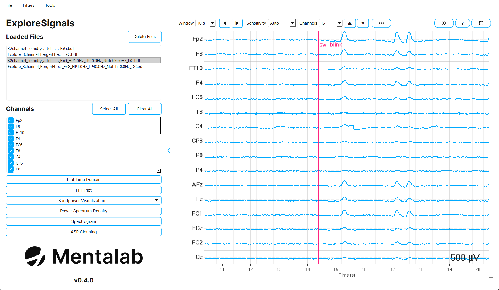

Overview
Offline ExG data visualization with Explore Signals
Explore Signals is Mentalab’s desktop application for working with Explore recordings after a session.
You can load a recording, inspect it in the time and frequency domain, filter it, clean it with Artifact Subspace Reconstruction (ASR), and export the result. Explore Signals also converts between the formats used across an Explore workflow: binary .BIN files from the device memory, .csv, .bdf, .xdf, BIDS datasets, and EEGLAB datasets.
The current version is 0.4.0.

Key features
| Area | What you can do |
|---|---|
Load |
Open |
Filter |
High-pass, low-pass, and notch filtering, average re-referencing, and DC offset correction. |
Visualize |
Time-domain plot, FFT, Power Spectrum Density (PSD), spectrogram, and bandpower over time or as bars. |
Clean |
Artifact Subspace Reconstruction with presets and a before-and-after comparison. |
Export |
Export the selected channels to |
Convert |
|
Merge |
Combine two recordings from Hypersync-synchronized devices, for example two 32-channel devices into one 64-channel recording. |
Repair |
Fill dropped packets in a |